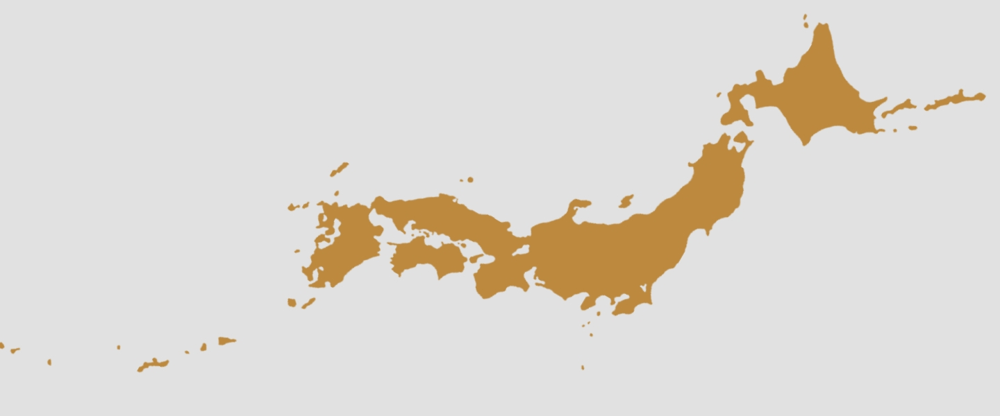

VALENTINE
ROSE
Concept
Price
News
ご予約
メニュー
HOME
SALON CONCEPT
PRICE MENU
SALONS
NEWS
RESERVE
Salons

ホーム
店舗一覧
Prefectures
Prefectures
都道府県
Tokyo
東京都
Kanagawa
神奈川県
Saitama
埼玉県
Osaka
大阪府
Kyoto
京都府
Fukuoka
福岡県
Okinawa
沖縄県
東京都
Tokyo
SHIBUYA
渋谷店
東京都渋谷区渋谷0-0-0
SHINJUKU
新宿店
東京都新宿区新宿0-0-0
神奈川県
Kanagawa
YOKOHAMA
横浜店
神奈川県横浜市西区0-0-0
HIRATSUKA
平塚店
神奈川県平塚市0-0-0
埼玉県
Saitama
KASUKABE
春日部店
埼玉県春日部市0-0-0
SAITAMA
さいたま店
埼玉県さいたま市0-0-0
大阪府
Osaka
UMEDA
梅田店
大阪府大阪市北区梅田0-0-0
SAKAI
堺店
大阪府堺市0-0-0
京都府
Kyoto
GOJO
五条店
京都府京都市下京区0-0-0
福岡県
Fukuoka
KURUME
久留米店
福岡県久留米市0-0-0
沖縄県
Okinawa
NAHA
那覇店
沖縄県那覇市0-0-0
RESERVE
予約はこちらから
店舗・SNS
SALONS
店舗一覧
SNS
インスタグラム